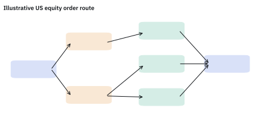

24.3 Exchanges, Brokers, ETFs, IPOs, and Securities Lending
ระหว่างสัญญาณเทรดกับเงินในบัญชีมีตัวกลางหลายชั้น แต่ละชั้นมีต้นทุนและความเสี่ยงที่ต้องนับเป็นตัวเลข
กองทุนตัดสินใจซื้อหุ้น Microsoft (MSFT) 50,000 หุ้นตอนราคา \$410.00 คำสั่งแบ่งไปสองที่ ตลาด A ได้ 30,000 หุ้นที่ \$410.03 ค่าธรรมเนียม \$0.002 ต่อหุ้น ผู้ค้า B ได้ 20,000 หุ้นที่ \$410.01 ค่าธรรมเนียม \$0.004 ต่อหุ้น ฝ่ายปฏิบัติการสรุปว่า “A ค่าธรรมเนียมถูกกว่าครึ่งหนึ่ง ครั้งหน้าส่ง A ทั้งหมด” ถูกไหม และการซื้อครั้งนี้เสียเงินไปเท่าไร?
ลองตอบก่อนเปิดเฉลย
ไม่ถูก ที่ A ต้นทุนรวมคือ $0.03+0.002=\$0.032$ ต่อหุ้น ที่ B คือ $0.01+0.004=\$0.014$ ต่อหุ้น B ถูกกว่าเกินสองเท่าเพราะราคาที่ได้ดีกว่า การซื้อครั้งนี้เสีย $960+280=\$1{,}240$ หรือ \$0.0248 ต่อหุ้น ถ้าสัญญาณคาดกำไร 8 bp ของ \$20.5 ล้าน คือ \$16,400 จะเหลือ \$15,160 ค่าธรรมเนียมที่ติดป้ายเป็นแค่ส่วนเล็กของต้นทุน
สิ่งที่เราจะสร้าง
ทั้งเล่มคิดราคาและความเสี่ยงราวกับว่าซื้อขายได้ที่ราคาบนจอ หน้านี้ดูว่าคำสั่งจริงเดินผ่านใคร: โบรกเกอร์รับคำสั่งแล้วส่งต่อไปตลาดหลักทรัพย์ (exchange) ระบบจับคู่นอกตลาด (ATS) หรือผู้ค้า (dealer) ที่ขายจากสต็อกตัวเอง แต่ละทางได้ราคาไม่เท่ากัน
เราจะนิยามต้นทุนการส่งคำสั่งเทียบราคาตอนตัดสินใจ คิดตัวอย่าง MSFT แยกต้นทุนเป็นก้อน ดูว่าควรแบ่งคำสั่งใหญ่ไหม แล้วไปดูตัวกลางอีกสามแบบด้วยบัญชีแบบเดียวกัน: ETF ที่ราคาถูกยึดไว้กับตะกร้าหุ้น หุ้นเข้าตลาดใหม่ (IPO) ที่การได้รับจัดสรรเปลี่ยนคำตอบ และการยืมหุ้นเพื่อขายชอร์ต แล้วจบที่ option ซึ่งให้ความเสี่ยงขาลงโดยไม่ต้องยืมหุ้น
ศัพท์ที่ใช้ในหัวข้อนี้
- Implementation shortfall (IS)
- ส่วนต่างระหว่างพอร์ตบนกระดาษที่ได้ของครบทันทีที่ราคาตอนตัดสินใจ กับพอร์ตจริง ใช้วัดว่าการลงมือแพงกว่าความตั้งใจเท่าไร
- Exchange, ATS และ dealer
- สามทางที่คำสั่งไปจับคู่ได้: ตลาดหลักทรัพย์ที่มีกติกาและสมุดคำสั่งเปิดเผย ระบบจับคู่นอกตลาด (บางแห่งไม่เปิดเผยคำสั่ง เรียก dark pool) และผู้ค้าที่ซื้อขายกับเราจากสต็อกตัวเอง
- Best execution
- หน้าที่ของโบรกเกอร์ที่ต้องพยายามให้ลูกค้าได้ผลดีที่สุดทั้งราคา ความเร็ว และโอกาสได้ของ ไม่ใช่ดูค่าธรรมเนียมอย่างเดียว
- ETF, NAV และ AP
- ETF คือกองทุนที่ซื้อขายในตลาดระหว่างวัน NAV คือมูลค่าตะกร้าหุ้นที่กองทุนถือต่อหน่วย AP (authorized participant) คือสถาบันที่แลกตะกร้าหุ้นกับหน่วย ETF ได้ ซึ่งดึงราคาให้ใกล้ NAV
- IPO และการจัดสรร (allocation)
- การขายหุ้นให้สาธารณะครั้งแรก ผู้จองอาจได้หุ้นไม่ครบตามที่จอง และได้มากหรือน้อยขึ้นกับว่าดีลนั้นมีคนแย่งแค่ไหน
- Securities lending และ borrow fee
- การยืมหุ้นจากผู้ถือระยะยาวเพื่อไปขายชอร์ต ผู้ยืมวางหลักประกันและจ่ายค่ายืมรายปี ผู้ให้ยืมเรียกคืน (recall) ได้เสมอ
สัญลักษณ์และหน่วย
| สัญลักษณ์ | ความหมาย | หน่วย |
|---|---|---|
| $Q,\ q_k$ | จำนวนหุ้นที่ตั้งใจซื้อ และจำนวนที่ได้ในแต่ละก้อน | หุ้น |
| $P_0,\ P_{f,k},\ P_T$ | ราคาตอนตัดสินใจ ราคาที่ได้ของก้อนที่ $k$ และราคาตอนจบ | \$ ต่อหุ้น |
| $c_k$ | ค่าธรรมเนียมต่อหุ้นของก้อนที่ $k$ | \$ ต่อหุ้น |
| $\eta,\ \sigma$ | ตัวคูณ impact ชั่วคราว และความผันผวนของราคาต่อช่วง | \$ ต่อหุ้นต่อหุ้น, \$ ต่อหุ้น |
| $p,\ f_b,\ r_c$ | โอกาสได้รับจัดสรร ค่ายืมหุ้นต่อปี และดอกเบี้ยของหลักประกันต่อปี | สัดส่วน, ต่อปี, ต่อปี |
ขั้นที่ 1 — วัดต้นทุนเทียบราคาตอนตัดสินใจ
ต้องมีเกณฑ์เทียบก่อนพูดว่าแพงหรือถูก ทศวรรษ 1980 กองทุนนิยมเทียบกับราคาเฉลี่ยถ่วงปริมาณของวัน (VWAP) André Perold (1988) ชี้ช่องโหว่: ถ้าตัดสินใจซื้อตอนเช้าที่ \$100 แต่โบรกเกอร์รอไปซื้อตอนบ่ายที่ \$105 ขณะที่ VWAP ช่วงบ่ายคือ \$105.05 รายงานจะบอกว่าชนะ VWAP 0.05 ทั้งที่กองทุนเสีย \$5 ต่อหุ้นจากการรอ เขาจึงเสนอให้เทียบกับราคาตอนตัดสินใจ นี่คือนิยาม
ฝั่งซื้อ ได้ราคาสูงกว่าตอนตัดสินใจคือเสีย ฝั่งขาย ได้ราคาต่ำกว่าคือเสีย เครื่องหมายจึงสลับกันเพื่อให้ต้นทุนเป็นบวกทั้งสองฝั่ง ส่วนค่าธรรมเนียมบวกเข้าไปทั้งสองฝั่ง สลับเครื่องหมายผิดครั้งเดียว รายงานจะบอกว่าทำได้ดีกว่าเกณฑ์ทั้งที่แย่กว่า
ขั้นที่ 2 — คำสั่ง MSFT ทีละที่
โจทย์ให้อะไรมาบ้าง: $P_0=410.00$ ตลาด A $q=30{,}000$ ที่ 410.03 ค่าธรรมเนียม 0.002 ผู้ค้า B $q=20{,}000$ ที่ 410.01 ค่าธรรมเนียม 0.004 และสัญญาณคาดกำไร 8 bp ของมูลค่า $50{,}000(410)=\$20.5$ ล้าน
คำตอบ: เสีย \$1,240 หรือ \$0.0248 ต่อหุ้น A แพงกว่า B เกินสองเท่า ($0.032$ เทียบ $0.014$ ต่อหุ้น) ทั้งที่ค่าธรรมเนียมถูกกว่า เพราะราคาที่ได้แย่กว่า 2 เซนต์ กำไรที่คาดจากสัญญาณเหลือ \$15,160
ตรวจเองใน 10 วินาที: $960+280=1{,}240$ และ 1,240 หารด้วย 16,400 คือ 7.6% ของกำไรที่คาดหายไปกับการส่งคำสั่ง
Figure 24.3a — เส้นทางของคำสั่งจากนักลงทุนถึงการจับคู่

แผนภาพสอน ไม่มีข้อมูล กล่องซ้ายคือนักลงทุน (Investor) ส่งผ่านโบรกเกอร์ (Broker) และระบบส่งคำสั่ง (Routing engine) ไปยังตลาดหลักทรัพย์ (NYSE / NASDAQ) ระบบจับคู่นอกตลาด (ATS) หรือผู้ค้า (Dealer / maker) ทุกทางจบที่ผลการจับคู่และข้อมูลราคา (Fill + data) ที่ต้องเก็บไว้คิดต้นทุนแบบขั้นที่ 2
ขั้นที่ 3 — ของที่ไม่ได้ก็มีต้นทุน
ถ้าตั้งใจซื้อ 60,000 หุ้นแต่ได้แค่ 50,000 แล้วราคาปิดที่ \$410.50 หุ้น 10,000 ตัวที่ไม่ได้ก็เป็นต้นทุนเหมือนกัน เพราะพอร์ตบนกระดาษได้กำไรจากมัน แต่พอร์ตจริงไม่ได้ เทียบสองพอร์ตตรง ๆ จะเห็นว่าต้นทุนแยกเป็นสองก้อน
ตอนลบ $P_T$ ของหุ้นที่ได้มาหักล้างกันพอดี ก้อนแรกจึงเหลือต้นทุนการลงมือของขั้นที่ 1 ก้อนหลังคือค่าเสียโอกาสของหุ้นที่ไม่ได้ ในตัวอย่างนี้ค่าเสียโอกาส \$5,000 ใหญ่กว่าต้นทุนการลงมือสี่เท่า การส่งคำสั่งแบบระวังจนได้ของไม่ครบจึงไม่ได้ถูกเสมอ
ขั้นที่ 4 — แบ่งคำสั่งใหญ่: ถูกลงแต่เสี่ยงขึ้น
คำสั่งก้อนใหญ่ดันราคาตัวเอง (market impact, 18.5) ยิ่งซื้อมากในช่วงเดียวยิ่งแพงต่อหุ้น ทางออกคือแบ่งเป็นหลายช่วง แต่ระหว่างรอ ราคาก็เดินได้ Almgren และ Chriss (2000) ตั้งปัญหานี้ให้ชั่งกัน ตัวอย่างสมมติ: ขาย $X=100{,}000$ หุ้น impact ชั่วคราว $\eta n$ ต่อหุ้นเมื่อขาย $n$ หุ้นในช่วงเดียว ($\eta=0.000002$) ราคาเดินช่วงละ $\sigma=\$0.50$ ต่อหุ้น (ตัด impact ถาวรออกเพื่อให้เห็นแก่น)
แต่ละช่วงขาย $X/n$ หุ้น เสีย $\eta(X/n)$ ต่อหุ้น รวม $n$ ช่วงได้ $\eta X^2/n$ ต้นทุนจึงลดตามจำนวนช่วง ส่วนความเสี่ยงมาจากหุ้นที่ยังถืออยู่หลังแต่ละช่วง ซึ่งเจอการเดินของราคา $\sigma$ ต่อหุ้นต่อช่วงแบบอิสระกัน variance จึงเป็นผลบวกของกำลังสอง
แบ่งสองก้อนประหยัด \$10,000 แต่รับความไม่แน่นอน SD \$25,000 คำตอบที่ดีที่สุดขึ้นกับว่ากลัวความเสี่ยงแค่ไหน ไม่มีคำตอบเดียว
ขั้นที่ 5 — ETF: ราคาถูกยึดไว้กับตะกร้าด้วยกรอบต้นทุน
ETF มีสองราคา: ราคาซื้อขายในตลาด และ NAV ซึ่งคือมูลค่าตะกร้าหุ้นที่กองทุนถือ ถ้าราคา ETF แพงกว่า NAV มาก AP จะซื้อตะกร้าหุ้น นำไปแลกหน่วย ETF ใหม่ (creation) แล้วขาย ETF ถ้าถูกกว่า ก็ทำกลับทาง (redemption) ถ้าทำแล้วไม่มีกำไรทั้งสองทาง ราคาต้องอยู่ในกรอบ
$c_{\text{up}}$ และ $c_{\text{down}}$ คือต้นทุนรวมต่อหน่วยของแต่ละทาง: ค่าธรรมเนียมแลก ค่าซื้อขายตะกร้าและ ETF และดอกเบี้ยระหว่างรอส่งมอบ ตัวอย่าง: ETF ราคา 101.20 NAV 100.00 ค่าแลก 0.20 ค่าซื้อขายและเงินทุน 0.35 ต่อหน่วย บน 10,000 หน่วย ส่วนต่าง \$12,000 หักต้นทุน \$5,500 เหลือ \$6,500
ถ้าระหว่างแลก ETF ลดเหลือ 100.90 กำไรเหลือ \$3,500 และถ้าดอกเบี้ยเพิ่มอีก \$800 เหลือ \$2,700 ในวันตลาดตึงเครียด ต้นทุนซื้อขายตะกร้าพันธบัตรพุ่ง กรอบจึงกว้างขึ้น ETF ที่ซื้อขายต่ำกว่า NAV ช่วงนั้นอาจกำลังบอกราคาขายจริงได้เร็วกว่า NAV ที่ยังใช้ราคาประเมินเดิม
Figure 24.3b — premium ของ ETF เทียบกับกรอบต้นทุน

แกนนอนคือการคลาดของราคา −2% ถึง +2% เส้นฟ้าคือ premium ที่เท่ากับการคลาดนั้น เส้นประแดงคือกรอบต้นทุน ±0.35% พื้นที่เขียวคือช่วงที่ premium เกินกรอบจนการแลกมีกำไร กรอบ 0.35% ในรูปนับเฉพาะค่าซื้อขายและเงินทุน ไม่รวมค่าแลก 0.20 ของขั้นที่ 5 ซึ่งทำให้กรอบจริงเป็น 0.55%
ขั้นที่ 6 — IPO: กำไรต้องถ่วงด้วยโอกาสได้หุ้น
หุ้น IPO ในสหรัฐฯ ปิดวันแรกสูงกว่าราคาจองโดยเฉลี่ยเกิน 10% มาหลายสิบปี ดูเหมือนเงินฟรี แต่ผู้จองไม่ได้หุ้นครบทุกครั้ง ตัวอย่างสมมติ: จอง 1,000 หุ้นที่ \$20 ถ้าได้ ขายวันแรกที่ \$23 เสียค่าซื้อขาย \$0.10 ต่อหุ้น และค่าวิเคราะห์ดีล \$100 จ่ายทุกกรณี โอกาสได้หุ้น $p=20\%$
กำไรต่อหุ้นถ้าได้คือ 2.90 แต่ต้องคูณโอกาสที่จะได้ ส่วนค่าวิเคราะห์เสียทุกครั้ง ถ้าโอกาสได้หุ้นต่ำกว่า 3.45% ก็ขาดทุนโดยเฉลี่ย การทดสอบย้อนหลังที่สมมติว่าได้หุ้นเต็มทุกดีลจึงหลอกตัวเอง และขั้นถัดไปแสดงว่าสมมติให้โอกาสเท่ากันทุกดีลก็ยังหลอก
ขั้นที่ 7 — winner's curse: ได้หุ้นเต็มเมื่อไม่มีใครอยากได้
Kevin Rock (1986) อธิบายว่าผู้ลงทุนที่มีข้อมูลดีจะแห่จองเฉพาะดีลที่ราคาถูก ดีลดีจึงถูกแบ่งจนได้นิดเดียว ส่วนดีลแย่ไม่มีคนแย่ง ผู้จองทั่วไปได้เต็ม ตัวอย่างสมมติ: ดีลดีขึ้น \$6 ดีลแย่ลง \$4 ต่อหุ้น อย่างละครึ่ง ได้รับจัดสรร 10% ในดีลดี และ 100% ในดีลแย่
ราคาเฉลี่ยขึ้น \$1 ต่อหุ้น แต่ผู้จองทั่วไปขาดทุน \$1,800 โดยเฉลี่ย เพราะโอกาสได้หุ้นกับกำไรของดีลไปทางตรงข้ามกัน ค่าเฉลี่ยของผลคูณจึงไม่เท่ากับผลคูณของค่าเฉลี่ย ถ้าได้รับจัดสรรเท่ากันทุกดีลจะได้ +900 ข้อมูลนี้คือเหตุที่ผู้จัดจำหน่ายต้องตั้งราคา IPO ต่ำ เพื่อให้ผู้จองทั่วไปยังคุ้มที่จะจอง
Figure 24.3c — โอกาสได้หุ้นเป็นส่วนหนึ่งของกำไร

แกนนอนคือโอกาสได้หุ้น 0 ถึง 100% (101 จุด) แกนตั้งคือกำไรคาดหวัง $p(1{,}000)(2.90)-100$ ของขั้นที่ 6 ที่โอกาสศูนย์ยังเสีย \$100 ที่โอกาสเต็มได้ \$2,800 เส้นประแดงคือจุดคุ้มทุน 3.45% รูปนี้ใช้โอกาสเดียวกันทุกดีล จึงยังไม่เห็นผลของขั้นที่ 7
ขั้นที่ 8 — ขายชอร์ต: ค่ายืมกับการถูกเรียกคืน
ในสหรัฐฯ ต้องหาหุ้นให้ยืมได้ก่อนส่งคำสั่งขายชอร์ต ผู้ให้ยืมมักเป็นกองทุนบำนาญหรือกองทุนดัชนีที่ถือหุ้นนาน ผู้ยืมวางเงินสดเป็นหลักประกันและได้ดอกเบี้ยคืนในอัตรา rebate $r_c-f_b$ ตัวอย่างสมมติ: ชอร์ตหุ้นที่ยืมยาก 20,000 หุ้นที่ \$30 ตั้งใจซื้อคืนที่ \$27 ภายใน 30 วัน ค่ายืม 36% ต่อปี ค่าซื้อขายไปกลับ \$1,600
ค่ายืมคิดตามวันปฏิทิน (30 จาก 365) เพราะหุ้นถูกยืมทุกวันรวมวันหยุด ค่ายืมกินกำไรจาก \$60,000 ไปเกือบสามในสิบ ถ้าผู้ให้ยืมเรียกคืนตอนราคาขึ้นเป็น \$32 และหาหุ้นมาแทนไม่ได้ โบรกเกอร์จะซื้อคืนให้ทันที ขาดทุน \$59,353.42 การถูกเรียกคืนมักเกิดตอนราคากำลังขึ้น ซึ่งเป็นตอนที่ไม่อยากปิดที่สุด
บรรทัดสุดท้ายบอกว่าเมื่อค่ายืมเกินดอกเบี้ยของหลักประกัน rebate ติดลบ ผู้ชอร์ตต้องจ่ายเงินให้ผู้ให้ยืมทุกวันที่ถือ
Figure 24.3d — ค่ายืมหุ้นเทียบกับสัดส่วนหุ้นที่ถูกชอร์ต

เส้นสอน ไม่ใช่ข้อมูลจริง แกนนอนคือหุ้นที่ถูกชอร์ตเป็นเปอร์เซ็นต์ของหุ้นที่ซื้อขายได้ 0 ถึง 40% แกนตั้งคือค่ายืมต่อปี $1\%+0.09\%\times s^{1.55}$ ที่ 20% ได้ราว 10.4% ต่อปี และแตะเส้นเตือน 20% เมื่อถูกชอร์ต 31.6% ค่ายืมโตเร็วกว่าเส้นตรงเพราะหุ้นให้ยืมเหลือน้อยลง
ขั้นที่ 9 — option: ความเสี่ยงแบบเดียวกัน โดยไม่ต้องยืมหุ้น
ถ้ายืมหุ้นยากและแพง ทางเลือกคือซื้อ put แต่คนมักถามก่อนว่า “ถ้าหุ้นขึ้น ถือหุ้นได้ 5 ถือ call ได้แค่ 1.60 จะซื้อ option ทำไม” ตอบด้วยต้นไม้หนึ่งก้าวของ 18.3: หุ้น \$100 ขึ้นเป็น 105 หรือลงเป็น 95.238 ดอกเบี้ยช่วงนี้ 2% call และ put strike 100 หา $x$ หุ้นกับเงินสด $y$ ที่ให้ผลเท่า call ทั้งสองกิ่ง
call หนึ่งตัวคือถือหุ้น 0.5122 หุ้นแล้วกู้ \$47.82 บรรทัดสุดท้ายเทียบให้ยุติธรรม: เงินที่จ่ายวันนี้ถ้าฝากไว้จะโตตามดอกเบี้ย จึงหักออกก่อน กำไรขาขึ้นของ call เท่ากับหุ้น 0.5122 หุ้นพอดี (ขาลงก็เสีย 3.4634 เท่ากัน) การเทียบ 5 กับ 1.60 เอาของที่เสี่ยงไม่เท่ากันมาเทียบ
put ราคา 1.4347 ได้จาก put–call parity ของ 14.4 คนที่อยากได้ความเสี่ยงขาลงจึงจ่าย \$1.43 แทนการยืมหุ้นที่ค่ายืม 36% ต่อปีและเสี่ยงถูกเรียกคืน ไม่มีบรรทัดไหนใช้โอกาสจริงที่หุ้นจะขึ้น
คำถามที่ควรถามออกมาดัง ๆ
โบรกเกอร์ที่ไม่เก็บค่าคอมมิชชันได้เงินจากไหน? บางรายได้เงินจากผู้ค้าที่จ่ายเพื่อรับคำสั่งของลูกค้ารายย่อย (payment for order flow) คำถามที่ต้องถามคือลูกค้าได้ราคาดีกว่าหรือแย่กว่าที่อื่น ซึ่งดูได้จากรายงานคุณภาพการจับคู่ตามกฎ SEC Rule 605 และ 606 ไม่ใช่จากค่าคอมมิชชันศูนย์
ระบบเทรดความเร็วสูงเสี่ยงอะไร? ความเสี่ยงที่ใหญ่ที่สุดมักเป็นซอฟต์แวร์ วันที่ 1 สิงหาคม 2012 Knight Capital ติดตั้งโค้ดผิดพลาดแล้วส่งคำสั่งไม่หยุดราว 45 นาที ขาดทุนราว \$440 ล้าน ระบบจึงต้องมีเพดานขนาดคำสั่งก่อนส่ง เพดานจำนวนข้อความ และปุ่มหยุดที่ทีมอื่นกดได้
ความผิดที่ให้คำตอบผิดแบบเงียบ ๆ
เลือกที่ส่งคำสั่งจากค่าธรรมเนียม: A ค่าธรรมเนียมครึ่งหนึ่งของ B แต่แพงกว่าเกินสองเท่าเมื่อนับราคาที่ได้
เทียบกับ VWAP แทนราคาตอนตัดสินใจ: ชนะ VWAP 0.05 ได้ทั้งที่เสีย 5 ต่อหุ้นจากการรอ
ลืมหุ้นที่ไม่ได้: ต้นทุนของตัวอย่างคือ \$6,240 ไม่ใช่ \$1,240 เมื่อตั้งใจซื้อ 60,000 หุ้น
สมมติว่าได้หุ้น IPO เท่ากันทุกดีล: +900 กลายเป็น −1,800 เมื่อโอกาสได้หุ้นสวนทางกับกำไร
ลืมค่ายืมและการถูกเรียกคืน: ชอร์ตที่ถูกทิศได้ \$40,646.58 ไม่ใช่ \$60,000 และถ้าถูกเรียกคืนตอนราคาขึ้น ขาดทุน \$59,353.42
ใช้ทำอะไรบนโต๊ะจริง
ทีมเทรดเก็บเวลาและราคาทุกขั้นของคำสั่ง (ตัดสินใจ ส่ง จับคู่ ยกเลิก) แล้วคิดต้นทุนแบบขั้นที่ 1 ถึง 3 แยกตามที่ส่งคำสั่ง เพื่อเลือกเส้นทางจากหลักฐาน ฝ่ายความเสี่ยงบันทึกค่ายืมหุ้นเป็นต้นทุนที่ผันผวน ตรวจว่ายืมหุ้นได้ก่อนส่งคำสั่งชอร์ต และทดสอบกรณีถูกเรียกคืนตอนราคาพุ่ง
สามโจทย์ตรวจความเข้าใจ
1. ขายหุ้น 40,000 หุ้น ราคาตอนตัดสินใจ \$50.00 ได้ 25,000 หุ้นที่ \$49.97 ค่าธรรมเนียม \$0.003 และ 15,000 หุ้นที่ \$49.99 ค่าธรรมเนียม \$0.005 ต้นทุนการส่งคำสั่งเท่าไร?
เฉลย
ฝั่งขายใช้ $P_0-P_f+c$: $25{,}000(0.03+0.003)=825$ และ $15{,}000(0.01+0.005)=225$ รวม \$1,050 หรือ $1{,}050/40{,}000=\$0.02625$ ต่อหุ้น ถ้าลืมกลับเครื่องหมายจะได้ต้นทุนติดลบ ราวกับขายได้ดีกว่าเกณฑ์
2. ในตัวอย่างขั้นที่ 7 โอกาสได้หุ้นดีลดีต้องเป็นเท่าไรผู้จองทั่วไปจึงเท่าทุน?
เฉลย
ต้องได้ $1{,}000\big(0.5\,p_G(6)-2\big)-100=0$ คือ $3000\,p_G=2{,}100$ หรือ $p_G=70\%$ ถ้าคนมีข้อมูลแย่งดีลดีจนเหลือต่ำกว่า 70% ผู้จองทั่วไปขาดทุนโดยเฉลี่ย
3. ชอร์ตในขั้นที่ 8 ถ้าค่ายืมลดเหลือ 12% ต่อปี และซื้อคืนที่ \$27 ตามแผน เหลือกำไรเท่าไร?
เฉลย
ค่ายืม $600{,}000(0.12)(30/365)=5{,}917.81$ กำไร $60{,}000-5{,}917.81-1{,}600=\$52{,}482.19$ ค่ายืมที่ลดลงสามเท่าคืนเงินมา \$11,835.61
คำนวณซ้ำด้วย JavaScript
โค้ดนี้คิดต้นทุนการส่งคำสั่งรวมค่าเสียโอกาส การแบ่งคำสั่งใหญ่ กำไรจากการแลก ETF กำไรคาดหวังของ IPO ทั้งแบบง่ายและแบบ winner's curse บัญชีชอร์ต และราคา call กับ put จากการสร้างซ้ำ แล้วพิมพ์ตัวเลขหลักออกมาหนึ่งบรรทัด
function num(name, x) {
if (typeof x !== 'number' || !Number.isFinite(x)) throw new TypeError(`${name} must be a finite number`);
return x;
}
// Implementation shortfall of a buy: slippage and fees on the filled part, plus the move on the unfilled part.
function shortfall({decision, target, fills, closePrice}) {
let filled = 0, cost = 0;
for (const f of fills) {
if (!(num('qty', f.qty) > 0)) throw new RangeError('each fill needs a positive qty');
filled += f.qty;
cost += f.qty * (num('price', f.price) - num('decision', decision) + num('fee', f.fee));
}
if (filled > num('target', target)) throw new RangeError('fills exceed the target');
return {filled, execution: cost, opportunity: (target - filled) * (num('closePrice', closePrice) - decision)};
}
// Sell X shares in n equal slices; temporary impact eta per share per share; risk from shares still held.
function slices(X, n, eta, sigma) {
if (!Number.isInteger(n) || n < 1) throw new RangeError('n must be a positive integer');
let variance = 0;
for (let k = 1; k < n; k++) variance += (X * (n - k) / n) ** 2;
return {cost: n * eta * (X / n) ** 2, sd: sigma * Math.sqrt(variance)};
}
// Expected IPO profit when the allocation probability differs between good and bad deals.
function ipo({qty, good, bad, pGood, allocGood, allocBad, fixedCost}) {
for (const [k, v] of Object.entries({pGood, allocGood, allocBad})) {
if (!(num(k, v) >= 0 && v <= 1)) throw new RangeError(`${k} must be in 0 to 1`);
}
return qty * (pGood * allocGood * good + (1 - pGood) * allocBad * bad) - fixedCost;
}
// One-step binomial call by replication: x shares and y in cash reproduce the payoff in both states.
function replicate({S0, up, down, R, K}) {
if (!(down < R && R < up)) throw new RangeError('need down < R < up');
const Su = S0 * up, Sd = S0 * down;
const cu = Math.max(Su - K, 0), cd = Math.max(Sd - K, 0);
const x = (cu - cd) / (Su - Sd), y = (cd - x * Sd) / R;
return {x, y, call: S0 * x + y, put: S0 * x + y - S0 + K / R};
}
const is = shortfall({decision: 410.00, target: 60000, closePrice: 410.50,
fills: [{qty: 30000, price: 410.03, fee: 0.002}, {qty: 20000, price: 410.01, fee: 0.004}]});
const borrowFee = 20000 * 30 * 0.36 * 30 / 365;
console.log(JSON.stringify({
is, perShare: is.execution / is.filled, alphaGross: 50000 * 410 * 0.0008, alphaNet: 50000 * 410 * 0.0008 - is.execution,
split: [1, 2, 4, 10].map(n => slices(100000, n, 2e-6, 0.5)),
etf: {gross: 10000 * 1.20, cost: 10000 * (0.20 + 0.35), profit: 10000 * (1.20 - 0.55), shrunk: 10000 * (0.90 - 0.55)},
ipoSimple: 0.2 * (1000 * 2.9 - 100) + 0.8 * -100, ipoBreakeven: 100 / 2900,
winnersCurse: ipo({qty: 1000, good: 6, bad: -4, pGood: 0.5, allocGood: 0.10, allocBad: 1, fixedCost: 100}),
shortBase: 20000 * (30 - 27) - borrowFee - 1600, shortRecall: 20000 * (30 - 32) - borrowFee - 1600, borrowFee,
rebate: 0.05 - 0.36, feeAlertShortInterest: (0.19 / 0.0009) ** (1 / 1.55),
option: replicate({S0: 100, up: 1.05, down: 1 / 1.05, R: 1.02, K: 100})
}));ที่มาที่ไป
André Perold เสนอ implementation shortfall ในปี 1988 Almgren และ Chriss ตีพิมพ์กรอบการแบ่งคำสั่งในปี 2000 Kevin Rock อธิบาย IPO ที่ตั้งราคาต่ำด้วย winner's curse ในปี 1986 ETF ตัวแรกที่ประสบความสำเร็จในสหรัฐฯ คือ SPY ซึ่ง American Stock Exchange เปิดในปี 1993 จากงานของ Nathan Most โดยใช้การแลกตะกร้าหุ้นกับหน่วยกองทุนแทนเงินสด กฎ Regulation SHO ของ SEC ในปี 2005 บังคับให้หาหุ้นให้ยืมได้ก่อนขายชอร์ต
ข้อจำกัด: วิธีนี้สมมติอะไร และของจริงเป็นอย่างไร
| สมมติอะไร | ของจริง | ผลเวลาใช้งาน |
|---|---|---|
| impact เป็นเส้นตรงและหายในช่วงเดียว | impact บางส่วนค้างถาวร และรูปทรงไม่เป็นเส้นตรง | ต้องประมาณจากข้อมูลคำสั่งของตัวเอง ตัวเลขขั้นที่ 4 เป็นแค่รูปทรง |
| ค่ายืมหุ้นคงที่ตลอดการถือ | ค่ายืมเปลี่ยนรายวันและพุ่งตอนหุ้นถูกชอร์ตมาก | ต้องทดสอบกรณีค่ายืมพุ่งและถูกเรียกคืนพร้อมกัน |
| ตัวกลางไม่ล้ม | โบรกเกอร์และคู่สัญญาเคยล้มมาแล้ว | ต้องรู้ว่าทรัพย์สินของเราเก็บแยกจริงไหม และกระจายคู่สัญญา |
สิ่งที่ควรตอบได้หลังอ่าน
- ต้นทุนการส่งคำสั่งวัดเทียบราคาตอนตัดสินใจ รวมราคาที่ได้ ค่าธรรมเนียม และหุ้นที่ไม่ได้ (\$1,240 และ \$6,240)
- แบ่งคำสั่งใหญ่ลดต้นทุน impact แต่เพิ่มความเสี่ยงระหว่างรอ ต้องเลือกตามความกลัวความเสี่ยง
- ราคา ETF ถูกยึดไว้กับ NAV ด้วยกรอบต้นทุนของการแลก ไม่ใช่เท่ากันทุกวินาที
- กำไร IPO ต้องถ่วงด้วยโอกาสได้หุ้น และเมื่อโอกาสนั้นสวนทางกับคุณภาพดีล ค่าเฉลี่ย +1 ต่อหุ้นกลายเป็นขาดทุน
- ชอร์ตต้องนับค่ายืมและการถูกเรียกคืน และ put ให้ความเสี่ยงขาลงแบบเดียวกันโดยไม่ต้องยืมหุ้น
บทที่ 25 กลับไปที่คณิตศาสตร์: ผลตอบแทนส่วนเกิน log return และการเลือกหน่วยวัดมูลค่า (numeraire) ซึ่งทำให้การตั้งราคาหลายแบบในเล่มนี้กลายเป็นเรื่องเดียวกัน